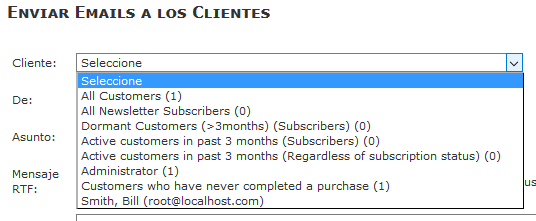
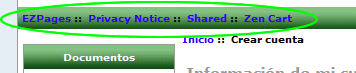

This large icon causes all the english text input boxes to be misaligned with other languages, so this language pack replaces it with a single flag icon
GPL Licence
Collator-Translator-Maintainer: torvista
This language pack differs from the Zen Cart english files in two aspects: date of birth format is dd/mm/yyyy (not mm/dd/yyyy) and weight is kg (not lbs).
Support Thread - Zen Cart forum: http://www.zen-cart.com/showthread.php?193098-Spanish-Language-Pack
Github: https://github.com/torvista/Zen-Cart-1.56x-Spanish-Language-Pack
The version of the language pack in the Plugins section of the Zen Cart site is only updated occasionally, and not for minor improvements. You should clone the repository from Github to be notified of these minor changes.
As always, install and review any modifications on your development site, NEVER on your production site.
If you have an older site that still uses latin-1/8859 for the database contents/connection and html page encoding either you should convert the database to utf-8.
There are multiple threads on this subject in the Zen Cart forum.
If you do not have a customised template or have been modifying the "classic" template: STOP NOW, create your own template and restore the "classic" files to their original states.
The "classic" template should be left untouched to help investigate/isolate any problems you create/introduce into the code with your customised template files.
If you have not installed the Backup MYSQL Plugin to provide easy database backups, do it now.
http://www.zen-cart.com/downloads.php?do=file&id=7
This should only overwrite ONE file: the pointless multiple flag icon  that was added in Zen Cart 1.56 for the english language.
that was added in Zen Cart 1.56 for the english language.
This large icon causes all the english text input boxes to be misaligned with other languages, so this language pack replaces it with a single flag icon  .
.
c) To stop php warnings/debug logs, multiple instances of TEXT_ATTRIBUTE_COPY_INSERTING have been removed as per Zen Cart 157. However the constant has changed to include variables. Consequently, the code that uses TEXT_ATTRIBUTE_COPY_INSERTING has also changed in ZC157. The code change is included in the file
ADMIN_NAME\includes\functions\general.156c with mod 157 php
so you can easily compare/merge that change into your (possibly already customised) file: general.php
If you don't do this, the admin success message that appears when you copy attributes will be missing the product from/to IDs....not a showstopper, so it doesn't matter if you don't do this.
Click on "new language" and fill in the fields:
Name: This is a text field so can be anything eg: Español/Spanish/Castellano. It can be changed anytime.
Code: es
Directory: spanish
Sort Order: Optional. This determines the display order of the language selection drop-down in the admin menu and the display order of the flags in the shop front.
Set as default: tick if you want the admin to display in spanish when you login.
Click on "Insert".
If you get any warnings at this point: DO NOT IGNORE THEM! STOP, MAKE A NOTE OF THEM/take a screenshot and investigate the problem: Google is your friend here. Use the forum.
At the moment of "Insert", all the existing database data in english (category/product names/descriptions, order status) are duplicated (not translated) to their new corresponding spanish fields.
The product/category data should then be exported for more efficient bulk translation, and a spanish file prepared for import to overwrite/update the spanish fields.
Note that the text of the options of configuration settings can be stored in the database in one language only, and so are only available in english.
Also in
Admin->Herramientas->Enviar Correo and
Admin->Vales de Compra/Cupones->Enviar por correo Vale de Compra
the drop-down texts are hard-coded in the database query_builder table.

They can be modified by hand if required.
If you find anything incorrectly/unclearly translated, please report your observations on Github or in the forum.
If you find something faulty, check that the fault is not present when using english before reporting it.
Note that the sidebox to display the available languages is not enabled by default.
Enable it in Tools->Layout Boxes Controller
These are not multi-language in a new Zen Cart installation: you have to install a plugin.
So this is normal:

If you find anything incorrectly/unclearly translated, please report your observations on Github or in the forum.
If you find something faulty, check that the fault is not present when using english before reporting it.
Make the changes you require for your particular shop in override files.
Copy the new files from the development to the production site and repeat step 3)
Note that the order status titles (Admin->Localization->Order Status) will need to be manually translated in addition to all products and categories.
From PHP 7.2 onwards, warnings are raised for missing constants or duplicated constants. These need to be fixed.
If the debug error occurs only with the spanish files, please report it in the thread for this language pack.
If the debug error occurs with the english files too, report it in Github.
Could be a file, database connection or database data with the incorrect encoding of UTF-8, search and read in the forum.
Possibly the locale is incorrect.
In spanish.php, the two versions of this files contain these lines:
$locales = array('es_ES.UTF8', 'es-ES', 'Spanish_Spain.1252', 'es');
This is a list of locales (if you don't know what that means, look it up). The values you can use depend on what is installed on the server (local or remote).
Probably the values that are in there already will be fine for both a Windows/*nix hosting since if the server does not have one, it uses the next...
If you want to know what your server supports, there is a script to check:
https://github.com/torvista/Zen-Cart-Test-Server-Locales
If any text is untranslated/incorrect or could be improved, please post a message in the Github repository.
If you see a constant name appear like "TEXT_SOMETHING_NEW" instead of text, this means that particular constant is not defined for the currently-selected language.
Find this constant definition in your files (it will probably only be defined in the english language files) and replicate it in the corresponding language file, and TELL someone if it is someone else's fault.
If you get white pages: check the debug log in the /logs directory and use this page to help you locate the fault: http://www.zen-cart.com/content.php?124-blank-page.
The spanish button images for the classic template were created with the Zen Button Construction Kit:
http://www.zen-cart.com/downloads.php?do=file&id=520
When using CSS buttons, the button text comes from the image button ALT definitions.
In the case of Submit buttons there is a 30 character limit hard-coded into zen_image_submit.
If this is exceeded, the normal Submit image is shown instead.
This may be useful if you wish to force the use of an image on a particular Submit button: just use a 30+ character alt text!
Please help to maintain and improve this translation by sending comments and corrections in the forum or on Github:
http://www.zen-cart.com/showthread.php?193098-Spanish-Language-Pack
I decided not to do this.
Since there is very little spanish community-support for Zen Cart spanish-speaking users, anyone wishing to develop Zen Cart will have to read english to find help and information...starting with the installation.
If you find the installation too difficult to follow in english, then working with and customising Zen Cart will not be the solution you need for your business, look elsewhere.